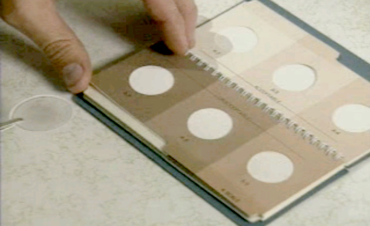
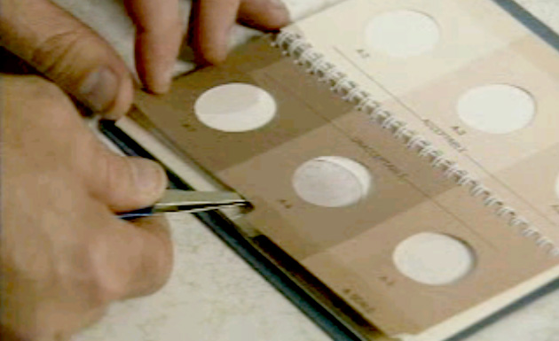
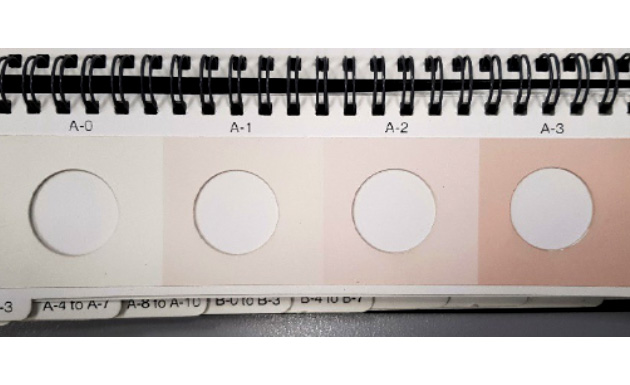
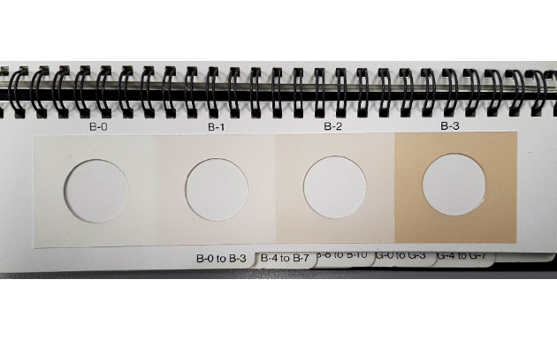
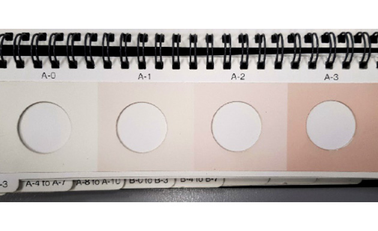
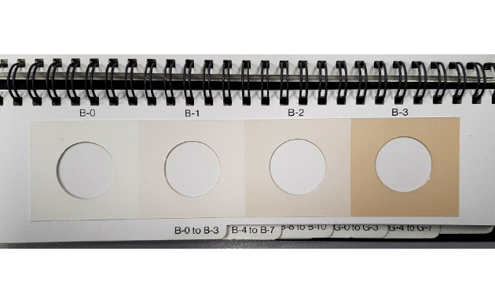
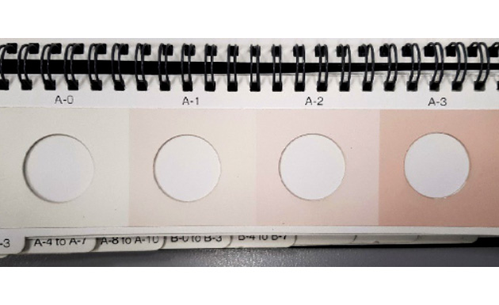
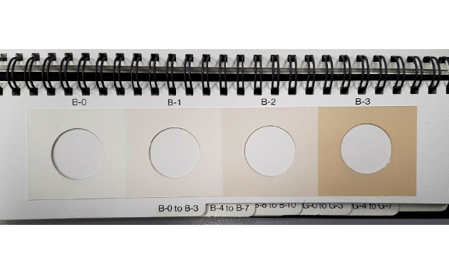

The membrane shall be rated wet and dry and the comparison can be made by airport or terminal personnel without the use of laboratory facilities.
Colorimetric tests can provide only an indication of a change in a particular system and is dependent upon previous membranes being available for comparison.


9.7.2 Selection of ASTM Color Scale
ASTM scales are selected as the most commonly encountered color shades to simplify comparison
If the color density is between two numbers, e.g. between B-3 and B-4, report the ‘lower’ number
The A (red) scale may be indicative of ferric-type rust or possibly some paint linings (especially ships). Other causes could be marker dyes, and a double membrane paper will show this with red color on both papers
The B (brown) scale is generally indicative of normal particulate – rust (hydrated ferric oxide or ferrous oxide) and sand/silica type particulates.


The G (grey) scale is indicative of a potential number of causes that should be further investigated
Fresh metal (suggesting engineering/maintenance works – welding/grinding etc., or wear metals from component disintegration, such as meter blades or vanes)
Clay treater breakthrough.
Black iron oxide, black iron sulfides or heat exchanger leaks are sometimes found when there has been a refinery upset
Overuse of a grease gun on swivel joints
Note - The color rating is not a quantitative test, and the color DOES NOT necessarily bear any relationship to the Gravimetric particulate contamination level.
9.7.3 Single Membrane Test Results
Color rating in the WET condition after sampling provides an IMMEDIATE indication of fuel cleanliness.
To obtain the ‘dry rating’, the wet membrane should be air dried in a clean and dustproof environment for at least 3 hrs
Dry colors are typically ONE or TWO numbers LOWER color rating than wet
Comparisons with the previous rating should not be based on mixed wet and dry ratings
Due to oxidation, sometimes a Wet A color dries to a B color and vice-versa
Maximum of 3 (dry) color ratings on the A, B or G scales are acceptable for delivery into Hydrant/Aircraft
Maximum 1 (dry) number difference from the previous test
Higher numerical results shall be investigated
Color rating of 5 (wet) or 4 (dry) or more
or
An increase of 2 (dry) above the previous month’s color rating
Action shall be taken to establish the cause and to initiate corrective action
Double membrane colorimetric test , and /or
Filter inspection
Unusual changes in membrane color rating may indicate a change in fuel contamination level, contaminant type, or the system mechanical condition.
On the other hand, a change in color rating can just as easily be the result of harmless color bodies in the fuel as from the presence of particulates.
This can be verified by conducting a double membrane test as part of an investigation. However, checks for particulate content with a Gravimetric Test are usually more definitive.
9.7.4 Double Membrane Test Result
Use of Double membranes helpful to distinguish between particulate CONTAMINATION and HARMLESS COLOR BODIES.
CONTAMINATION or DIRT in fuel will make the UPPER (upstream) membrane significantly DARKER color after testing than the lower membrane
If the fuel contains SOLUBLE COLOR BODIES, then both membranes will be similarly stained by the test
In order to assist in the investigation of anomalies, double membrane test is taken to supplement single membrane Colorimetric test results.
By comparing the color rating of the upper and lower membranes of the millipore monitor, it can be evaluated whether the significant change in the Colorimetric ratings are merely color bodies or are contaminants.
If the fuel is dirty, the upper membrane may have a significantly darker color after testing than the lower membrane.
If the fuel contains soluble color bodies then both membranes should be stained to the same level by the test.
After the test, both membranes should be allowed to dry and then rated against the ASTM Color Standards in the recommended manner.
If the difference between the rating of the upper and lower membranes is 3 or more (dry) the fuel may not be acceptable
Further investigation including Gravimetric membrane testing shall be carried out.
Investigation will continue into various aspects of the fuel and distribution system components until remedy is made and satisfactory Gravimetric test results are obtained.
Color ratings in isolation may have no particular significance. If it is necessary to obtain a particulate assessment at a location where there is no history, this should be done by performing both Gravimetric and Colorimetric assessments for initial establishment of a base line.
9.7.5 Gravimetric Test Result
The presence of discrete particles on the membrane may indicate gross product contamination.
An investigation should be instituted to identify the nature of the particles which could be hose rubber, filter fibers due to migration, line scale, sand, coating, paint flakes, metal particles, etc.
Visible particles on a membrane can also be present from careless handling such as dropping the monitor after removing or before replacing the plugs or exposing the monitor to dusty/windy conditions with the plugs removed.
The Gravimetric "notification" limit generally required by the Airlines and specified by Industry is a maximum of 0.20 mg/litre at the aircraft fueling adapter
This level shall not be exceeded immediately downstream of a filter at any point in the product handling system from the terminal storage tanks into the aircraft
If a gravimetric result exceeds this limit, airlines which received such product shall be advised.
Any gravimetric test result of 0.20 mg/litre or more downstream of an airport filter or a filter supplying to an airport must be reported immediately

 (1) copy.png) 



 (1) copy.png)